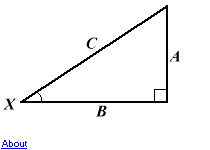

Right Triangle Trig Calculator
Fill in two values and press Calculate. The other two values will be filled in.
You may adjust the accuracy of your results.
Use of this page requires that Javascript be enabled. Yours seems to be disabled.

Side A =
Side B =
Side C =
Angle X =
degrees
Accuracy =
nearest whole number - 1
tenths - .1
hundredths - .01
thousandths - .001
10 thousandths - .0001
100 thousandths - .00001
no rounding
Triangle rendered to scale:
<TABLE CELLSPACING="0" CELLPADDING="5" BORDER="0" WIDTH="452" ALIGN="center" BGCOLOR="#FFFFDD"> <TR><TD ALIGN="center"><FONT SIZE="1" FACE="verdana,arial,helvetica" COLOR="#EE2222">This page uses floating frames. If you were using a browser that "did" floating frames (such as Internet Explorer), you would be able to see a scaled triangle rendered here. But, since you're not, you don't ;-)</FONT></TD></TR> </TABLE>